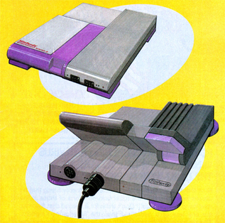
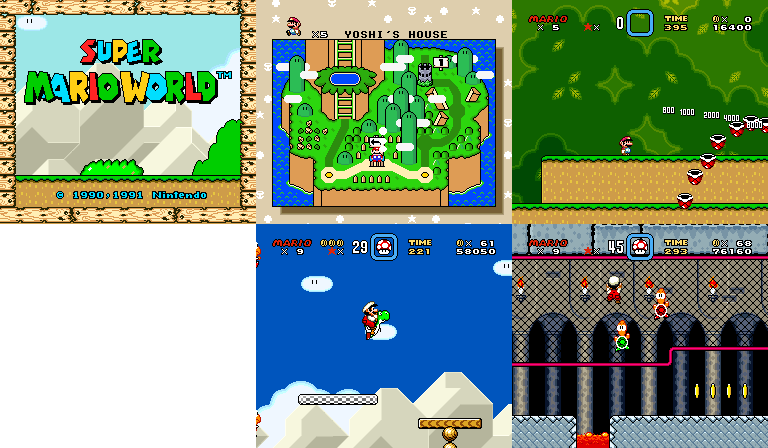
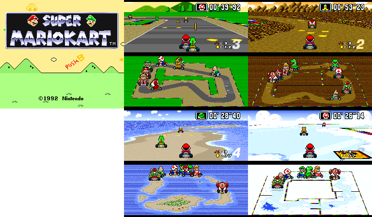
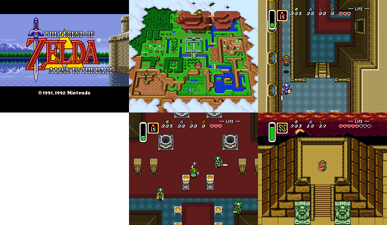
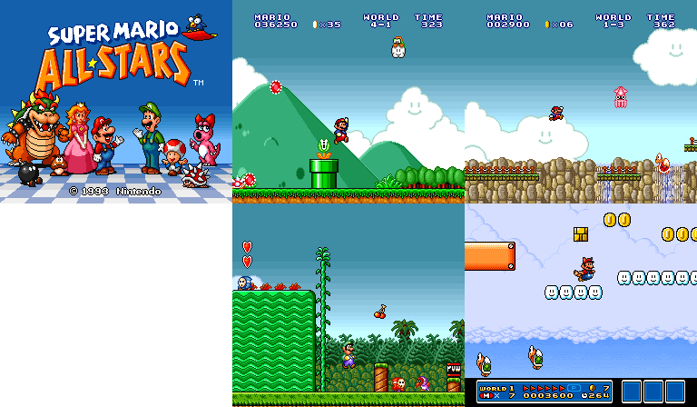

The Super Nintendo Entertainment System
The Super Nintendo Entertainment System, also known as the Super Famicom in Japan, is Nintendo's second major home console. Released in 1990, it brought along new innovative concepts and advanced gaming even more.
Personal Favourites: Super Mario World, Super Mario Kart, A Link to the Past
Personal Worst: N/A
Development of the Super Famicom
The Famicom had enjoyed relative dominance of the gaming industry in Japan, however, two new competitors prompted Nintendo to start production of a new console. These were NEC's PC-Engine (aka the TurboGrafx-16), and SEGA's Mega Drive (aka the Genesis). Nintendo began planning for the system in 1987, with demos being shown off to the press in late 1988 and early 1989.
Release of the Super Famicom
The system released in November of 1990 and was sold out within hours. The system launched with only two games; Super Mario World, and F-Zero, and the demand of the system caught the attention of the Yakuza, prompting Nintendo to ship the systems at night, in order to avoid robberies of the consoles.
Release of the Super Nintendo Entertainment System
Designers at Nintendo initially planned to release the system as the NES 2, with a more rounded and flatter purple design. However, they elected to call it the Super NES, mirroring the Japanese naming scheme of the console, and designed it similarly to the Japanese system. Curiously, the PAL versions of the system use the Japanese design with Super Nintendo Branding.
The SNES released in limited quanitites in August 1991, being fully released in September. There were more games on offer for the American release due to the longer time between the two nations' releases. The SNES recieved fierce competition from SEGA and their Mega Drive console, with Nintendo coming out on top at the end of it all.
Nintendo had been very restrictive licensing-wise and censorship-wise during the NES era, as they wanted all third-party games to go through them. However, noticing that SEGA and NEC posed a threat to their market dominance, the company relaxed their grip on licensing. However, they continued to review and censor games that they viewed that they saw as inappropriate for their audience.
The SNES-CD
After watching his daughter play Famicom games, Sony engineer Ken Kutaragi secretly developed a sound chip for Nintendo's Super Famicom, much to his superior's chagrin. However, Nintendo was very pleased with the chip, leading Nintendo to start a partnership with Sony. This partnership was for Sony to create a CD-ROM addon for the SNES and a hybrid unit similiar to the Twin Famicom by Sharp. A deal was made before the SNES released, in 1988.
This deal was ultimately never to be. Hiroshi Yamauchi had suspicions against Sony, as the tools for their sound chip were expensive, and they wanted exclusive rights and control over the CD-ROM format, with music and movies being a planned format for the addon. He ordered NoA's president, his son-in-law Minoru Arakawa, to seek a more favourable deal with Phillips. Sony announced the system at CES 1991 as the Nintendo Playstation. The next day, Nintendo announced a partnership with Sony, which understandably pissed off the Sony staff.
Nintendo's deal with Phillips didn't result in a CD-ROM addon, but Phillips were allowed to use the Super Mario and Legend of Zelda IPs for game development, leading to mediocre results. Sony's failure lead them to develop a video game system of their own, ironically also called the Playstation.
The Satellaview
Following Nintendo's failure to secure a CD-ROM addon for the SNES with either Sony or Phillips, Nintendo wanted a hardware addon for the SNES. Nintendo looked to their past, with the Famicom Disk System's Disk Kiosks. They realised that with satellite broadcasts, they could provide a similar service. Development for the Satellaview was a collaboration between Nintendo and broadcasting company St.GIGA, and they initially had a good working relationship. The system launched exclusively in Japan, in April of 1995. It was only available via mail order.
Featuring an Earthbound-styled interface, and beloved Nintendo IPs, the Satellaview was moderately successful, having reached a peak userbase by mid-1997. However, tensions were growing between Nintendo and St.GIGA, as the latter had refused a debt management plan, meant to boost the failing company. Additionally having failed to acquire a broadcasting license (meaning that their past broadcasts violated the law), Nintendo severed ties with the company and left them in March 1999, where they were to manage the Satellaview alone.
They kept it up for 15 months more, and shut the service down at the end of June of 2000. Much of the system's content is unfortnately lost due to the temporary nature of broadcast media. St.GIGA folded in March 2003 to become Club Cosmo, where they shut down in October and had their material auctioned off.
Nintendo Power
dummy text
Legacy
dummy text
Console Gallery
The original Super Famicom, SHVC-001, released in November 1990

The original Super NES, SNS-001, released in August 1991

The pal Super NES, SNSP-001A, released in April 1992

The Satellaview, released in April 1995

The New-Style SNES, SNS-101, released in October 1997

The Super Famicom Jr, SHVC-101, released in March 1998

Concept art for the NES 2
Games Gallery (Gameplay captured with bsnes)
Super Mario World
Super Mario Kart
A Link to the Past
Super Mario All Stars
Super Metroid